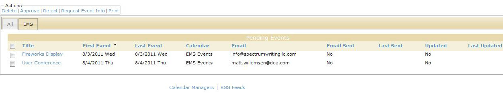
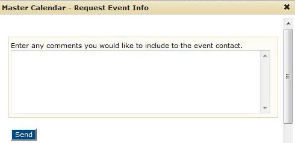
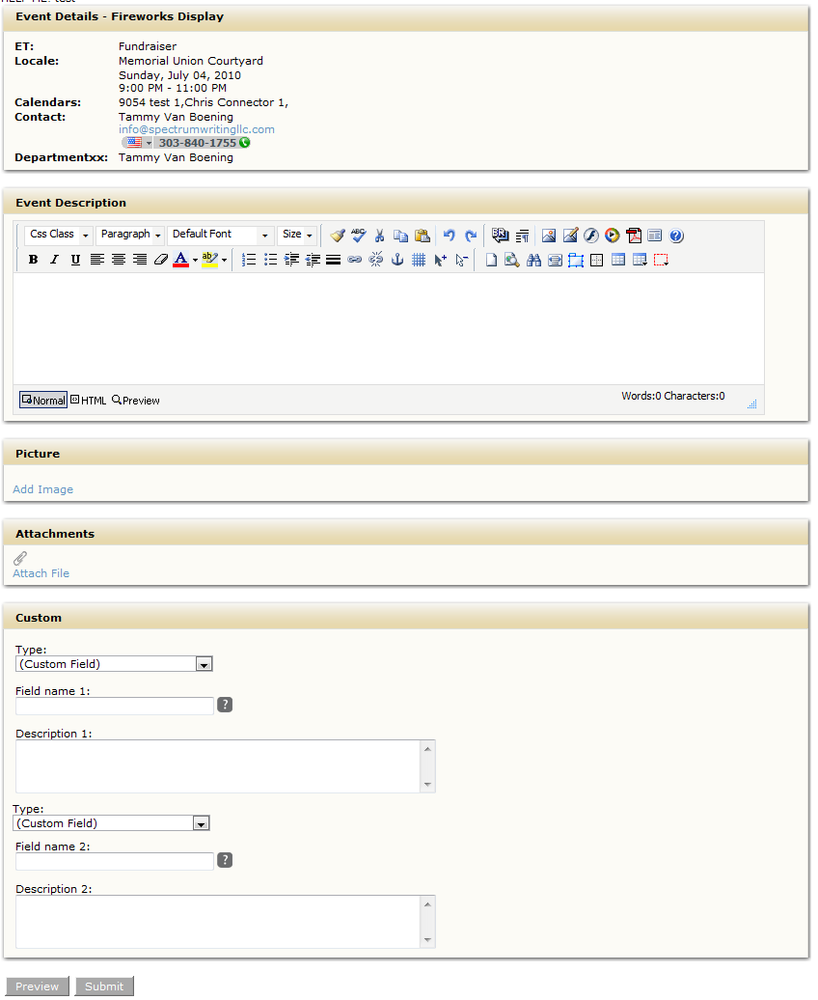

You use the Request Event Info option on the Manage Events page to request information from the EMS Contact for a selected event that has been pulled into Master Calendar from an EMS database.
1. From the Manage Events page, filter for the pending events that you are approving.
2. Click the EMS tab. This tab shows all the events that have been pulled from an EMS database into Master
Calendar via a connector.
Manage Events page, EMS tab

3. Select the event or events for which you need more information from the EMS Contact, and then under Actions, click Request Event Info. The Request Event Info dialog box opens.
Request Event Info dialog box

5. Enter any questions that you would like to request of the EMS Contact, and then click Send.
6. Click OK in the prompt about sending an email to request more information.
7. Click OK in the confirmation message. The email is sent to the EMS Contact for the selected event. The email contains a "Fill out more info" link that the EMS Contact can click to open an Additional Info page on which they can enter or edit the requested information and then submit the information. This action essentially allows the EMS contact to work directly with the event in Master Calendar and prevents you from having to manually enter the information that you have requested from the EMS contact.
Email sent to EMS Contact
Additional Info Page

 | Tip:Depending on how your site administrator has configured Master Calendar, after the EMS Contact modifies the information for the event, the event request may be set to a Pending status. An automated email would then be generated and sent to the Calendar Manager informing the manager of the modifications by the contact and the status change to “Pending” for the event. |
Page tags: article:topic